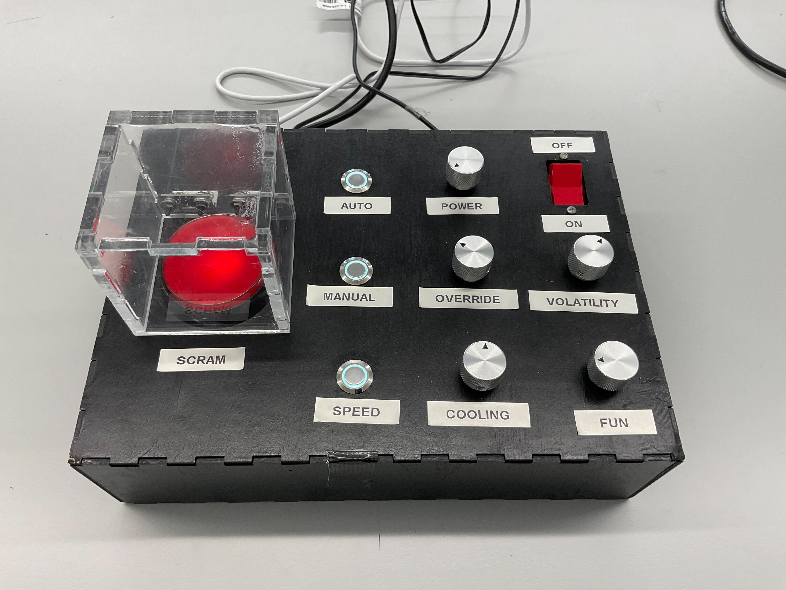

and another group member ECE 5730 Digital System Design using Microcontrollers
Cornell University
Hardware Design
The hardware design was first motivated by utility and second by aesthetic goals. During brainstorming, we identified several parameters we want to control with our device. After tallying these parameters, they were then grouped into instantaneous controls (modes, save states, catalyze action) and relative controls (increase or decrease some parameter). instantaneous controls could be achievd by buttons or switches and relative controls can be controller by encoders or potentiometers.
We decided to use a rotary encoder for the relative controls and buttons for the instantaneous controls. The rotary encoder was chosen because it is a simple and effective way to control the parameters of the simulation. The buttons were chosen because they are easy to use and provide a tactile feedback to the user.
We chose rugged, metal components for our buttons and encoder knobs. We wanted to use hardware that had a very tactile/industrial feel. We also wanted to have a big red button to hit in case of emergency. All of these component choices fed into the primary themes of rugged industialism as you'd expect to find as an oporator of a Nuclear reactor
Enclosure Design
The enclosure was designed to have a rugged and industrial. The enclosure is made of lasercut plywood and acrylic. The enclosure was designed to be easy to assemble and disassemble using box joints. The enclosure was designed in Fusion 360, lasercut, spraypainted, and then glued together at the joints. The Acrylic button cover was epoxied together and then mounted to the enclosure using nuts, bolts, and a hinge.
Circuit Design
| Component | Function |
|---|---|
| Raspberry Pi Pico | Execute control firmware, acquire and process user inputs, generate VGA video output, and drive audio signals to speakers. |
| Buttons | Enable selection of operational modes: SCRAM, Autonomous, Manual, and Half-Speed. |
| Encoders | Precisely adjust system parameters: target reactor power, coolant flow rate, volatility, control rod position, and fun. |
| VGA Output | Generate video output for the simulation display. |
| DAQ | Acquire analog sensor signals and convert them into digital output for Geiger counter click sounds corresponding to individual U-235 fission events. |
| 5V Power Input | Supply regulated 5 V DC to illuminate control button status LEDs. |
Integration
All connections were soldered and covered with heat shrink to ensure nothing shorted during use. The goal was to create solid connections for all components, using extra long wires so top cover of the black box can be removed for testing, debugging, or fixing lose breadboard connections. Since all wiring and components would be abstracted away from the user, tucked away within the black box, we focused on utility over aesthetics for the interal wire routing and harnessing. We grouped like wires together using zip ties and taped components down using masking and painters tape. Initially, we were having many issues with loose breaboard connections so we superglued or hot glued final connections in place after validating all systems.

By sequestering all wiring and components within the housing, we were able to achieve a simple, clean, and effective user dashboard. By leaving only the necessary user input controls, we elevated the user experience.
Pain Points
One of the more tedious aspects of the integration was soldering. We had to solder all of the wires to the buttons, encoders, and other components. This was a time-consuming process, but it was necessary to ensure that all of the connections were solid and reliable. We also had to be careful not to overheat the components while soldering, as this could damage them. Several of the encoder connections broke off during the process by snapping off after too many bends. We had to re-solder these connections and be more careful in the future. This tended to happen when soldering stranded wire to the encoder pins as they transfer heat much slower than solid wire. Thus the system encoder got very hot and the plastic would start to melt.
Another issue with the stranded wire was that we couldn't plug the stranded wire into the breadboard. We got around this by tinning the ends with some solder to stiffen them. If the wire diameter was still too large at this point we then used wire stripped to remove several of the strands and then resolder.
After lasercuttiing the enclosure box, we then spray painted it with 2 coats of primer and finished with two coats of black spray paint. This ended up looking very nice, but the primer may not have been necessary. After spraying, we had to wait 24 hours for the paint to dry before we could assemble the enclosure. Overall, this was worthwhile, but if we could skip the primer step, we could have accelerated our timeline by a day.
We also had consistent issues with one of the encoders. The final encoder was tested on other pins and seemed to work, but in our final assembly, it was not working. We belive our Pico may have had fried GPIO pins that we didn't notice until the final assembly. Thus, our last encoder is labeled "Fun" as a tactile fidget toy for the user.